UDN
Search public documentation:
MaterialEditorUserGuideKR
English Translation
日本語訳
中国翻译
Interested in the Unreal Engine?
Visit the Unreal Technology site.
Looking for jobs and company info?
Check out the Epic games site.
Questions about support via UDN?
Contact the UDN Staff
日本語訳
中国翻译
Interested in the Unreal Engine?
Visit the Unreal Technology site.
Looking for jobs and company info?
Check out the Epic games site.
Questions about support via UDN?
Contact the UDN Staff
머티리얼 에디터 사용 안내서
문서 변경내역: Dave Burke 작성. Daniel Wright, Richard Nalezynski, Jeff Wilson 수정. 홍성진 번역.
개요
머티리얼 에디터 열기
머티리얼 에디터 인터페이스

- 메뉴바
- 툴바
- 미리보기 패널 - 메시의 머티리얼을 미리봅니다.
- 머티리얼 표현식 그래프 패널 - 셰이더 인스트럭션 제작을 위해 이 패널에서 머티리얼 표현식을 결합합니다.
- 머티리열 표현식 패널 - 사용가능한 머티리얼 표현식 목록입니다.
- 머티리얼 함수 라이브러리 - 사용할 수 있는 머티리얼 함수 목록입니다.
- 프로퍼티 패널 - 머티리얼이나 선택된 머티리얼 표현식 노드의 프로퍼티입니다.
메뉴바
창
- 프로퍼티 - 프로퍼티 패널이 표시됩니다.
- 미리보기 - 미리보기 패널이 표시됩니다.
- 머티리얼 표현식 - 머티리얼 표현식 그래프를 표시합니다.
툴바
다음은 각 툴바 버튼에 대한 설명으로, 툴바 표시상 왼쪽에서 오른쪽 순입니다.| 아이콘 | 설명 |
|---|---|
 | 메인 패널의 좌상단 코너에 베이스 머티리얼 노드가 오도록 머티리얼 표현식 그래프를 옮깁니다. |
| 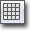 | 머티리얼 미리보기 패널의 배경 그리드를 토글합니다. |
| 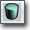 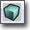  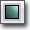 | 머티리얼 미리보기에 사용할 표준 모양을 선택합니다. |
| 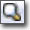 | 콘텐츠 브라우저를 열고 머티리얼을 선택합니다. |
 | 콘텐츠 브라우저에서 스태틱 메시를 선택하고 이 버튼을 누르면 선택된 메시를 미리보기 메시로 지정합니다. |
 | 머티리얼에 연결되지 않은 머티리얼 표현식 노드를 지웁니다. |
| 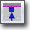 | 아무것에도 연결되지 않은 머티리얼 표현식 단자를 표시/숨깁니다. |
| 켜면 미리보기 메시의 머티리얼을 실시간으로 업데이트합니다. 에디터 성능을 위해서라면 이 옵션은 끄십시오. | |
| 켜면 각 머티리얼 표션식 노드의 머티리얼을 실시간으로 업데이트합니다. 에디터 성능을 위해서라면 이 옵션은 끄십시오. | |
 | 이 버튼은 머티리얼 표현식의 bRealtimePreview (실시간 미리보기) 옵션에 대한 글로벌 토글입니다. 켜면 모든 하위표현식의 셰이더는 노드가 추가, 삭제, 연결, 연결 해제, 프로퍼티 값 변경시마다 컴파일됩니다. 에디터 성능을 위해서라면 이 옵션은 끄십시오. 표현식 미리보기 부분을 참고하십시오. |
 | 머티리얼 에디터에서 변경한 사항을 원본 머티리얼과 월드에 해당 머티리얼을 사용한 곳에 적용합니다. |
 | 표현식 그래프 패널에 머티리얼 통계를 표시/숨깁니다. |
 | 현재 선택된 표현식에 대한 HLSL 소스 표시를 토글합니다. |
 | 텍스트 일부가 일치하는 표현식을 검색할 수 있습니다. 자세한 것은 머티리얼 표현식 검색 부분을 참고하십시오. |
미리보기 패널
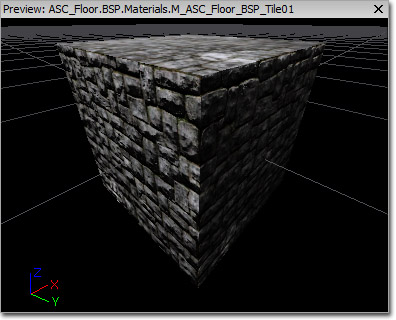
머티리얼 미리보기 패널은 편집중인 머티리얼을 메시에 적용하여 보여줍니다. 마우스 왼쪽 버튼으로 끌면 메시의 회전, 가운데 버튼으로는 패닝, 오른쪽 버튼으로는 줌입니다. 라이트의 방향은 L키를 누르고 좌클릭 드래깅으로 회전시킬 수 있습니다. 관련 툴바 콘트롤(모양 버튼, "미리보기 메시 선택" 콤보 박스, "선택된 스태틱 메시 사용" 버튼 등)을 사용하여 미리보기 메시를 바꿀 수 있스니다. 미리보기 메시는 머티리얼에 저장되므로 다음 번에 머티리얼 에디터에서 열 때도 같은 메시에서 미리볼 수 있습니다.프로퍼티 패널
 이 패널에는 선택된 머티리얼 표현식에 대한 프로퍼티창이 담깁니다. 선택된 표현식이 없으면 편집중인 머티리얼 자체의 프로퍼티가 표시됩니다.
모든 머티리얼 프로퍼티에 대한 설명은 Materials Overview KR 페이지를 확인하시기 바랍니다.
이 패널에는 선택된 머티리얼 표현식에 대한 프로퍼티창이 담깁니다. 선택된 표현식이 없으면 편집중인 머티리얼 자체의 프로퍼티가 표시됩니다.
모든 머티리얼 프로퍼티에 대한 설명은 Materials Overview KR 페이지를 확인하시기 바랍니다.
머티리얼 표현식 패널
 이 패널에는 "드래그 앤 드롭" 방식으로 머티리얼에 놓을 수 있는 머티리얼 표현식이 나열됩니다. 머티리얼 표현식 노드를 새로 놓으려면, 표현식에 좌클릭 > 그래프 패널로 드래그 > 원하는 위치에 드롭 하면 됩니다.
이 패널에는 "드래그 앤 드롭" 방식으로 머티리얼에 놓을 수 있는 머티리얼 표현식이 나열됩니다. 머티리얼 표현식 노드를 새로 놓으려면, 표현식에 좌클릭 > 그래프 패널로 드래그 > 원하는 위치에 드롭 하면 됩니다.
머티리얼 함수 라이브러리
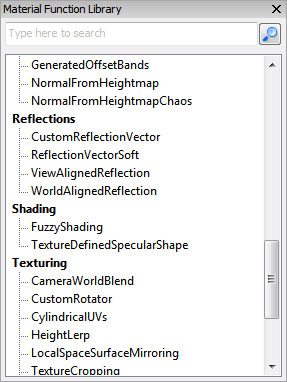
이 패널에는 "드래그 앤 드롭" 방식으로 머티리얼에 놓을 수 있는 머티리얼 함수 목록이 표시됩니다. 새로운 머티리얼 함수를 놓으려면 놓으려는 함수 종류에 왼클릭한 후, 커서를 그래프 패널 위로 끌어 놓습니다. 적합한 머티리얼 함수가 할당된 MaterialFunctionCall 노드가 새로이 놓입니다.머티리얼 표현식 그래프 패널
 이 패널에는 이 머티리얼에 속하는 모든 머티리얼 표현식의 그래프가 포함되어 있습니다. 머티리얼에 사용된 셰이더 인스트럭션 수와 함께 컴파일러 에러 도 좌상단 구석에 표시됩니다. 인스트럭션 수가 적을 수록 머티리얼 비용도 싸집니다. 기본 머티리얼 노드에 연결되지 않은 머티리얼 표현식 노드는 머티리얼의 인스트럭션 수(비용)에 계산되지 않습니다.
머티리얼에는 디폴트로 하나의 머티리얼 노드가 포함되어 있습니다. 이 노드에는 여러가지 입력이 달려 있는데, 각각은 머티리얼의 다양한 면에 관련되어 있으며, 여기에 다른 표현식이나 표현식 망이 연결될 수 있습니다.
이 패널에는 이 머티리얼에 속하는 모든 머티리얼 표현식의 그래프가 포함되어 있습니다. 머티리얼에 사용된 셰이더 인스트럭션 수와 함께 컴파일러 에러 도 좌상단 구석에 표시됩니다. 인스트럭션 수가 적을 수록 머티리얼 비용도 싸집니다. 기본 머티리얼 노드에 연결되지 않은 머티리얼 표현식 노드는 머티리얼의 인스트럭션 수(비용)에 계산되지 않습니다.
머티리얼에는 디폴트로 하나의 머티리얼 노드가 포함되어 있습니다. 이 노드에는 여러가지 입력이 달려 있는데, 각각은 머티리얼의 다양한 면에 관련되어 있으며, 여기에 다른 표현식이나 표현식 망이 연결될 수 있습니다.
 머티리얼 노드의 여러가지 입력에 대한 설명은 Materials Overview KR 페이지를 확인해 주시기 바랍니다.
머티리얼 노드의 여러가지 입력에 대한 설명은 Materials Overview KR 페이지를 확인해 주시기 바랍니다.
콘트롤
머티리얼 에디터의 콘트롤은 언리얼 에디터 내의 다른 툴 콘트롤과 일반적으로는 비슷합니다. 머티리얼 표현식 그래프는 여타 오브젝트 에디터들과 같은 식으로 조작할 수 있으며, 머티리얼 미리보기 메시도 다른 메시 툴과 마찬가지로 방향을 맞출 수 있습니다.마우스 콘트롤
| 콘트롤 | 액션 |
|---|---|
| 배경에 좌/우클릭-드래그 | 머티리얼 표현식 그래프 패닝 |
| 마우스 휠 스크롤 | 줌 인/아웃 |
| 좌+우클릭 드래그 | 줌 인/아웃 |
| 오브젝트에 좌클릭 | 표현식/코멘트 선택 |
| 오브젝트에 Ctrl + 좌클릭 | 표현식/코멘트 선택 토글 |
| Ctrl + 좌클릭 + 드래그 | 현재 선택/코멘트 옮기기 |
| Ctrl + Alt + 좌클릭 + 드래그 | 박스 선택 |
| Ctrl + Alt + Shift + 드래그 | 박스 선택(하여 현재 선택에 추가) |
| 단자에 좌클릭 + 드래그 | (하다가 단자나 변수에서 떼면) 연결 생성 |
| 연결에 좌클릭 + 드래그 | (하다가 같은 종류의 단자나 변수에서 떼면) 연결 이동 |
| 단자에 Shift + 좌클릭 | 단자를 마크합니다. 단자가 마킹된 상태로 다른 단자에 Shift + 클릭하면 두 단자를 연결합니다. 원거리 연결이 매우 빨라집니다. |
| 배경에 우클릭 | 새 표현식 메뉴를 띄웁니다. |
| 오브젝트에 우클릭 | 오브젝트 메뉴를 띄웁니다. |
| 단자에 우클릭 | 오브젝트 메뉴를 띄웁니다. |
| 단자에 Alt + 좌클릭 | 단자의 무든 연결을 끊습니다. |
| (미리보기 패널에서) L 키 + 드래그 | 미리보기 라이트 방향을 돌립니다. |
키보드 콘트롤
| 콘트롤 | 액션 |
|---|---|
| Ctrl + C | 선택된 표현식 복사 |
| Ctrl + V | 붙여넣기 |
| Ctrl + W | 선택된 오브젝트 복제 |
| Ctrl + Y | 다시하기 |
| Ctrl + Z | 되돌리기 |
| Delete | 선택된 오브젝트 삭제 |
| 스페이스바 | 모든 머티리얼 표현식 미리보기 강제 업데이트 |
| Enter | (적용 클릭과 동일) |
핫키
자주 사용되는 머티리얼 표현식 유형은 핫키로 놓을 수 있습니다. 단축키를 누르고 노드의 놓을 곳에 좌클릭하면 됩니다. 핫키는 다음과 같습니다:| 핫키 | 표현식 |
|---|---|
| A | Add 더하기 |
| B | BumpOffset 범프 오프셋 |
| C | ComponentMask 컴포넌트 마스크 |
| D | Divide 나누기 |
| E | Power 파워(승) |
| F | MaterialFunctionCall 머티리얼 함수 호출 |
| I | If 만약 |
| L | LinearInterpolate 선형 보간 |
| M | Multiply 곱하기 |
| N | Normalize 정규화 |
| O | OneMinus 1빼기 |
| P | Panner 패너 |
| R | ReflectionVector 리플렉션 벡터 |
| S | ScalarParameter 스칼라 파라미터 |
| T | TextureSample 텍스처 샘플 |
| U | TexCoord 텍스처 좌표 |
| V | VectorParameter 벡터 파라미터 |
| 1 | Constant 상수 |
| 2 | Constant2Vector 상수 2벡터 |
| 3 | Constant3Vector 상수 3벡터 |
| 4 | Constant4Vector 상수 4벡터 |
| Shift + C | Comment 코멘트 |
표현식 코멘트
 머티리얼 표현식 노드는 해당 노드의 "Desc" 프로퍼티에 텍스트를 입력하여 개별적으로 코멘트를 달 수 있습니다.
여러 노드를 선택하고 'Shift + C'를 쳐서 노드 그룹에 그룹 코멘트를 할당할 수도 있습니다. "새 코멘트" 대화창에 코멘트 텍스트를 입력하고 OK를 칩니다. 선택된 노드가 코멘트 프레임에 묶이게 됩니다. 그룹 코멘트의 노드는 그룹 코멘트 텍스트를 드래그하여 움직일 수 있습니다. 코멘트 프레임의 우하단 코너에 있는 검정 삼각형을 드래그하여 프레임 크기도 조절할 수 있습니다. 그룹 코멘트 내의 노드는 전부 프레임과 함께 움직이므로, 기존 프레임 크기를 조절하여 새 노드를 포함시킬 수도 있습니다.
코멘트를 선택하고 프로퍼티창을 통해 "Text" 프로퍼티를 변경하면 코멘트의 이름을 바꿀 수 있습니다.
머티리얼 표현식 노드는 해당 노드의 "Desc" 프로퍼티에 텍스트를 입력하여 개별적으로 코멘트를 달 수 있습니다.
여러 노드를 선택하고 'Shift + C'를 쳐서 노드 그룹에 그룹 코멘트를 할당할 수도 있습니다. "새 코멘트" 대화창에 코멘트 텍스트를 입력하고 OK를 칩니다. 선택된 노드가 코멘트 프레임에 묶이게 됩니다. 그룹 코멘트의 노드는 그룹 코멘트 텍스트를 드래그하여 움직일 수 있습니다. 코멘트 프레임의 우하단 코너에 있는 검정 삼각형을 드래그하여 프레임 크기도 조절할 수 있습니다. 그룹 코멘트 내의 노드는 전부 프레임과 함께 움직이므로, 기존 프레임 크기를 조절하여 새 노드를 포함시킬 수도 있습니다.
코멘트를 선택하고 프로퍼티창을 통해 "Text" 프로퍼티를 변경하면 코멘트의 이름을 바꿀 수 있습니다.
표현식 미리보기
 머티리얼 에디터의 노드에는 좌상단 구석에 작은 박스가 있습니다. 이 박스는 노드의 bRealtimePreview (실시간 미리보기) 프로퍼티를 나타내며: 노랑은 켜짐, 검정은 꺼짐 입니다.
머티리얼이 어떤 식으로든 (생성, 삭제, 연결, 프로퍼티 변경 등등) 바뀔 때마다, bRealtimePreview (실시간 미리보기) 프로퍼티가 켜진 노드는 전부 그 셰이더를 다시 컴파일합니다. 머티리얼 미리보기를 해당 노드에서 최신으로 유지하려면 이런 리컴파일이 필요합니다. 그러나 이런 중간 셰이더 리컴파일은 시간을 잡아먹을 수 있는데, 특히나 머티리얼에 노드가 많을 경우에는 더합니다. 그래서 작업 방해를 피하기 위해서, TextureSample 을 제외한 모든 노드 유형에 대해서는 기본적으로 bRealtimePreview (실시간 미리보기)가 꺼져 있습니다.
스페이스바를 쳐서 강제로 모든 미리보기를 업데이트시킬 수도 있습니다. 아무튼 가급적 많은 노드의 bRealtimePreview (실시간 미리보기)를 끄고, 변경 확인시마다 스페이스를 치는 방식을 통해 반복처리 속도를 높일 수 있습니다.
노드의 좌상단 구석 박스를 클릭하거나, 노드를 선택한 상태에서 프로퍼티 창을 통해 노드의 bRealtimePreview (실시간 미리보기)를 토글할 수 있습니다.
"Toggle Expression Realtime Preview" (표현식 실시간 미리보기 토글) 버튼으로 모든 노드 글로벌 토글이 가능합니다.
머티리얼 에디터의 노드에는 좌상단 구석에 작은 박스가 있습니다. 이 박스는 노드의 bRealtimePreview (실시간 미리보기) 프로퍼티를 나타내며: 노랑은 켜짐, 검정은 꺼짐 입니다.
머티리얼이 어떤 식으로든 (생성, 삭제, 연결, 프로퍼티 변경 등등) 바뀔 때마다, bRealtimePreview (실시간 미리보기) 프로퍼티가 켜진 노드는 전부 그 셰이더를 다시 컴파일합니다. 머티리얼 미리보기를 해당 노드에서 최신으로 유지하려면 이런 리컴파일이 필요합니다. 그러나 이런 중간 셰이더 리컴파일은 시간을 잡아먹을 수 있는데, 특히나 머티리얼에 노드가 많을 경우에는 더합니다. 그래서 작업 방해를 피하기 위해서, TextureSample 을 제외한 모든 노드 유형에 대해서는 기본적으로 bRealtimePreview (실시간 미리보기)가 꺼져 있습니다.
스페이스바를 쳐서 강제로 모든 미리보기를 업데이트시킬 수도 있습니다. 아무튼 가급적 많은 노드의 bRealtimePreview (실시간 미리보기)를 끄고, 변경 확인시마다 스페이스를 치는 방식을 통해 반복처리 속도를 높일 수 있습니다.
노드의 좌상단 구석 박스를 클릭하거나, 노드를 선택한 상태에서 프로퍼티 창을 통해 노드의 bRealtimePreview (실시간 미리보기)를 토글할 수 있습니다.
"Toggle Expression Realtime Preview" (표현식 실시간 미리보기 토글) 버튼으로 모든 노드 글로벌 토글이 가능합니다.
컴파일러 에러
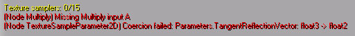
컴파일러 에러에 제공되는 문제 발생 표현식의 종류와 에러에 대한 설명을 통해, 그 문제가 무엇인지 알 수 있습니다. 게다가 에러가 있는 노드는 그래프 패널에 빨갛게 강조되어 보이므로, 쉽게 찾아 필요한 연결을 메꿀 수 있습니다.
머티리얼 표현식 검색
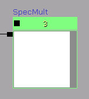
주: 검색은 대소문자를 구별합니다. 검색 대상 프로퍼티 값은 다음과 같습니다:| 표현식 종류 | 검색되는 프로퍼티 |
|---|---|
| All | Desc |
| Texture Sample | Texture |
| Parameters | ParamName |
| Comment | Text |
| FontSample | Font |
| MaterialFunctionCall | MaterialFunction |
NAME= 스위치를 사용하면 특정 표현식 종류만을 대상으로 검색할 수도 있습니다. 예를 들어 모든 텍스처 샘플러를 찾으려면:
NAME=texture
 와
와 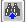
버튼을 사용하여 검색 결과 표현식 전부를 돌아가며 볼 수 있습니다. 애초부터든, 나 버튼으로든, 선택된 일치 결과가 보이지 않는 경우, 그래프 패널의 뷰에 나타납니다.
검색을 비우려면 버튼을 누르면 됩니다.
애초부터든, 나 버튼으로든, 선택된 일치 결과가 보이지 않는 경우, 그래프 패널의 뷰에 나타납니다.
검색을 비우려면 버튼을 누르면 됩니다.